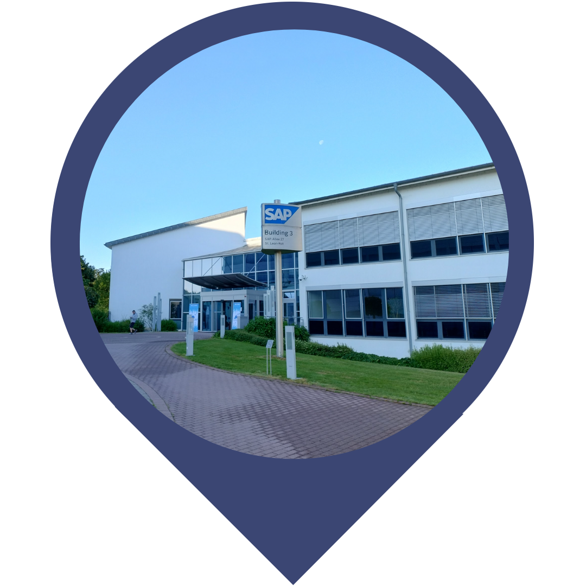

Location
SAP SE (ROT03), SAP-Allee 27, 68789 Sankt Leon-Rot, Germany
Code Connect brings together four exciting events - CodeJam, reCAP, UI5con, and ABAPConf - all taking place in the same week and location. This is your chance to deep dive into your chosen tech or broaden your horizon, understanding the end-to-end dev flow. Whether you're joining for just one event or the whole package, be ready to connect, collaborate, and code away with a bustling community of like-minded developers!
Save the dates and check-out the conference pages for more details
{ Registration will open on March 21st at 4pm CET }
get your ticketSAP SE (ROT03), SAP-Allee 27, 68789 Sankt Leon-Rot, Germany